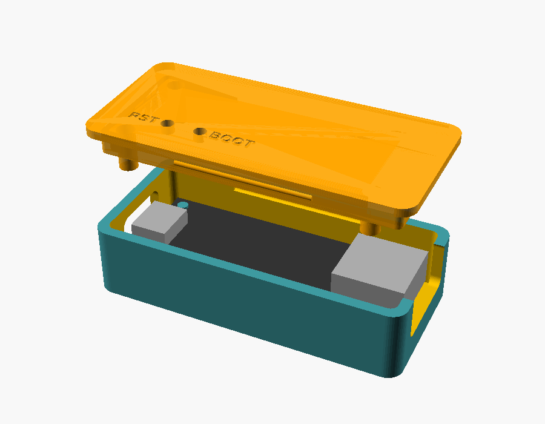
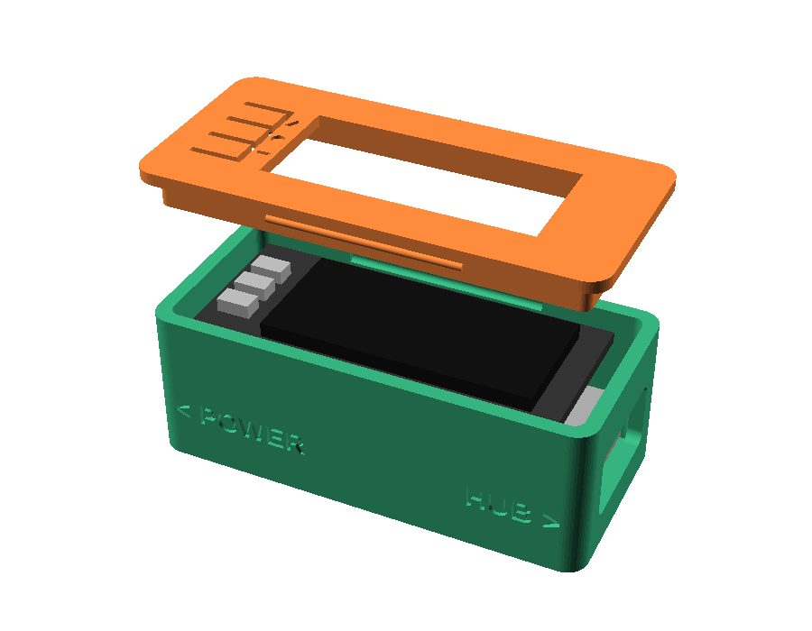
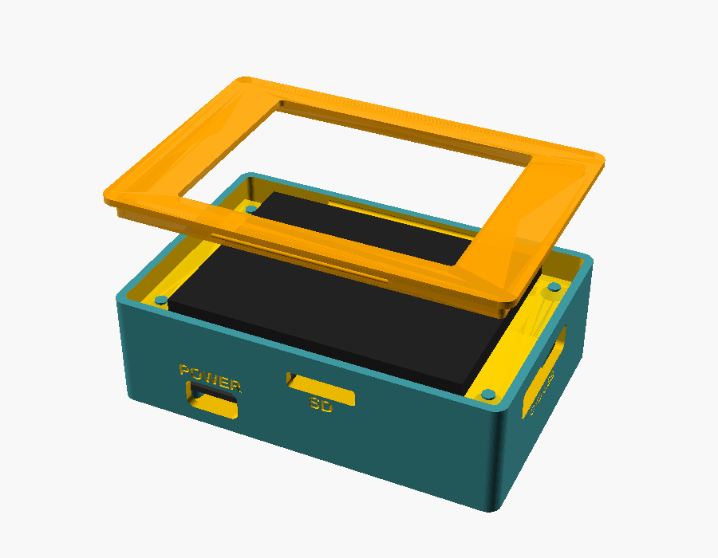
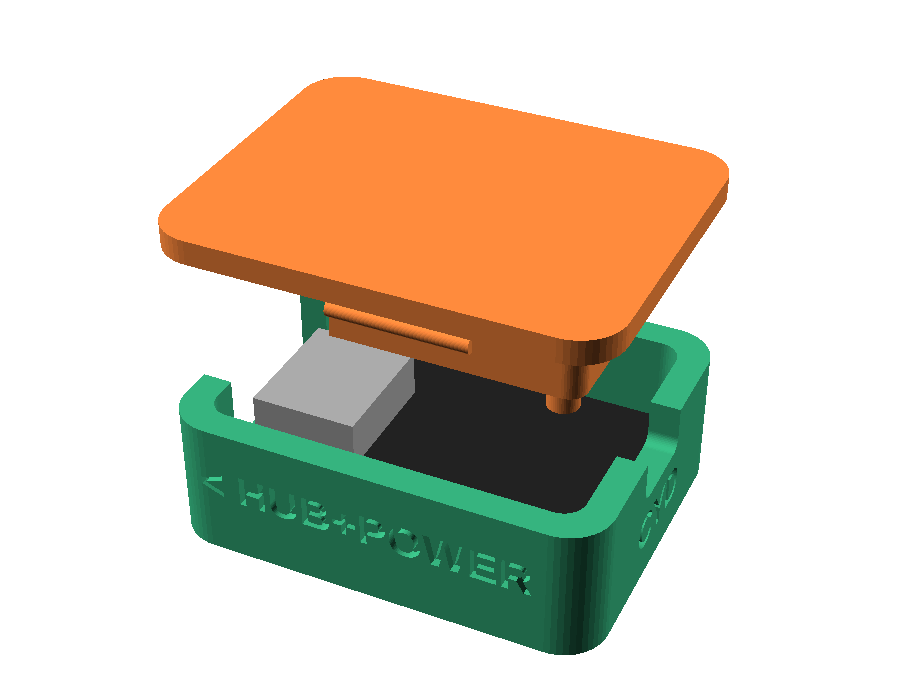

An Adafruit Feather RP2040 with USB Type A Host, a USB hub in its USB-A socket, and the FM-1 and your controllers on the hub. Whatever any of them sends goes to all of the others.
You need
- the Feather RP2040 with USB Type A Host
- a USB hub (one with its own power supply if you plug in more than a couple of things)
- a USB-C cable that carries data, and a computer for this once
- afterwards: a USB-C charger or power bank
Install
- Get the firmware.
- Hold the Feather's BOOT button while you plug its USB-C into the computer, then let go. A drive called
RPI-RP2appears. -
Copy the file onto
RPI-RP2. Drag it there, or let this page do it (Chrome or Edge): pick theRPI-RP2drive when asked. - The drive disappears and the Feather restarts: it's ready. (A new drive,
fm1buddy, shows up: that's for the firmware switcher.) -
Plug in: a USB hub into the Feather's USB-A (HUB on the case), and the FM-1 and your keyboards and controllers into the hub. The Feather's USB-C (POWER) is for power: a charger, a power bank or a computer. The FM-1 can't go there, it needs the hub too. The red LED blinks when MIDI goes through.
keyboard ─┐ ├─ USB hub ── HUB (USB-A) Feather POWER (USB-C) ── charger FM-1 ─────┘
A case

Print the base open side up and the lid flat side down, without supports (PLA or PETG). The lid snaps on. The lid has holes over BOOT and RESET, for a paperclip.
MIDI mapping, without a screen
Everything passes as it is, until you say otherwise. With the Feather on a computer, open midimap.txt on its fm1buddy drive and add a rule per line, then save and eject. The box uses them a second after you save, and every time it starts:
from nanokontrol2 ch 1 cc 10 -> ch 2 cc 5
cc 1 -> pc
pb -> dropThe file explains the rest. A name matches any device whose name has it in it (any case).
To update later, do the same again: your settings and files stay.
The USB host box with an Adafruit 128x64 OLED FeatherWing on top: it installs FM-1 firmwares that you copy onto it, and edits the MIDI mapping, with its three buttons.
You need
- everything for the USB host box
- the 128x64 OLED FeatherWing
- headers to stack them: male on the Feather, female on the FeatherWing (or stacking headers), and a soldering iron
- optional: an Adalogger FeatherWing for an SD card (the Feather holds about 10 firmwares by itself)
Build it
- Solder the headers onto the Feather and the FeatherWing, and stack the FeatherWing on top (its buttons up).
- Install the firmware as for the USB host box: it's the same file.
- Add FM-1 firmwares. With the Feather on the computer, open the
fm1buddydrive and copy.fwscpackages into itsfm1folder (from the FM-1 Firmware Hub, or your own foma builds). - Plug in the hub (into HUB), and the FM-1 and your controllers into the hub; power into POWER. The screen shows the FM-1 it found, top right.
A case

Print the base open side up and the lid flat side down, without supports (PLA or PETG). The lid snaps on. The tabs next to the screen press its three buttons.
With an Adalogger FeatherWing stacked in between, print the sd_oled case:
Use it
| A | up |
|---|---|
| B | OK (hold it: back) |
| C | down |
- Install firmware: pick a package, and OK installs it on the FM-1 (after checking it's for that model). Keep the FM-1 plugged in until it says Installed.
- MIDI map: pick a rule or add a rule; OK on a field changes it with up and down. learn fills in what you play next.
- MIDI thru turns the everything-to-everything on or off.
An ESP32-2432S028R "Cheap Yellow Display" touch screen, wired to the USB host box: it gets FM-1 firmwares from the FM-1 Firmware Hub over Wi-Fi (or from its SD card), installs them, and edits the MIDI mapping. It also brings in Bluetooth MIDI: phones, tablets, computers, and wireless keyboards and synths play along with what's on the hub.
You need
- the USB host box, installed
- an ESP32-2432S028R "Cheap Yellow Display", and the 4-wire cable that comes with it
- a microSD card (FAT32)
- Chrome or Edge on a computer, and the CYD's USB cable
Install
- Plug the CYD into the computer with its USB cable.
-
Install: press the button, pick the CYD's port (USB Serial, CH340 or usbserial), and confirm.
This browser can't: use Chrome or Edge on a computer (or download the .bin for esptool). The page must be opened over https. No port in the list? Windows and older macOS may need the CH340 driver. If it can't connect, hold the CYD's BOOT button while it starts.
- The SD card (FAT32): put it in the CYD. Firmwares go into its
fm1folder: the CYD downloads them there itself (below), or copy.fwscpackages there on a computer. -
Wire it to the Feather, from the CYD's
CN1connector:
Power the CYD from its own USB (a 2-port charger powers both).CYD CN1 Feather GND GND IO22 TX IO27 RX 3.3V (not connected) - Turn them on. The top right of the CYD shows the FM-1 on the hub: tap a package, then INSTALL. DEVICES → MAP is the MIDI mapping.
- New firmwares, without a computer: tap ONLINE. The first time, pick your Wi-Fi and type its password (or put a
wifi.txton the card: the network's name on the first line, its password on the second). It lists the Firmware Hub's packages for the FM-1 on the hub; tap one, DOWNLOAD, then INSTALL. Each download is checked (its size, sha256 and identity) before it's kept. - Bluetooth MIDI: connect a phone, tablet or computer to fm1buddy, or tap DEVICES → BLUETOOTH and tap a wireless keyboard or synth to connect it (it's remembered). They become devices on the box, for MIDI thru and the mapping. Update the Feather too: older box firmware doesn't know them.
A case

Print the base open side up and the lid flat side down, without supports (PLA or PETG). The lid snaps on. The Feather lies across the box behind the CYD, its USB ports out the sides. Run its 3 wires before you close it.
The smallest, cheapest box: a Waveshare RP2040-Zero, about the size of a thumbnail, with one USB-C port. A USB-C OTG adapter with a charging port splits that port into the hub and the power. It routes and maps MIDI like the Feather box, with fewer extras: see what it can't do.
You need
- a Waveshare RP2040-Zero
- a USB-C OTG adapter with a charging port (USB-C plug; a USB-A socket and a USB-C charging socket) that passes charging and data at the same time. Look for one sold for the Chromecast with Google TV: it's the same situation, a device that is the USB host while it's powered through that port. Many 3-port "splitters" can't: they say "does not support charging and data at the same time".
Or a hub with a power input made for the Chromecast or Fire TV (USB-C plug, USB-A ports, a charging port): the adapter and the hub in one. - a USB hub (any small one: the adapter powers it)
- a USB-C charger or a power bank
- a USB-C cable and a computer, for this once
Install
- Get the firmware.
- Hold the board's BOOT button while you plug it into the computer (straight in, not through the adapter), then let go. A drive called
RPI-RP2appears. -
Copy the file onto
RPI-RP2. Drag it there, or let this page do it (Chrome or Edge). -
Plug in: the adapter into the board, a hub into the adapter's USB-A, a charger or power bank into its charging port, and the FM-1 and your controllers into the hub. The LED flashes once when it starts, and when MIDI goes through.
keyboard ─┐ ├─ USB hub ── OTG adapter ── RP2040-Zero FM-1 ─────┘ │ charger ────┘ (its charging port)
A case

Print the base open side up and the lid flat side down, without supports (PLA or PETG). The lid snaps on, holds the board down, and is thin enough over it for the LED to shine through. The slot at the far end is for a CYD's wires.
What it can't do
- No USB drive and no screen: its only USB port is the host. Installing FM-1 firmware needs a CYD (wired as below), or plug the FM-1 straight into a computer and use the FM-1 Firmware Hub.
- MIDI mapping comes from a USB stick: put
midimap.txton it (FAT32; the rules are as on the USB host box), and plug it into the hub. The box reads it when the stick goes in and keeps the rules until it's switched off. With a CYD, the CYD's rules win. - No battery inside: a power bank is the battery. Some switch off when little is drawn.
- MIDI thru (everything to everything) is always on.
- To update the box itself, open the lid to reach BOOT.
With a CYD
Install the CYD as on its tab, and wire its CN1 to the board's pins:
| CYD | RP2040-Zero |
|---|---|
| CN1 GND | GND |
| CN1 IO22 | GP0 (TX) |
| CN1 IO27 | GP1 (RX) |
| P1 VIN (optional) | 5V: powers the CYD from the adapter |
Good to know
- The FM-1 only takes firmware over USB, so installing goes through the host box (or a computer).
- On a battery: the battery cases fit a flat 500 mAh LiPo (like Adafruit's 1578) under the Feather, and have a hole for a small slide switch in its lead. The Feather charges it from its USB-C, and makes the 5 V for the hub from it (500 mA at most). Roughly: the box and a small controller run an hour or two on 500 mAh; whatever else on the hub draws power (the FM-1, if it charges from it) takes from that.
- Installing firmware is at your own risk. If the FM-1 won't start, hold OCT- while switching it on (the USB rescue), and install again.
- If a controller sends back everything it receives ("MIDI thru" or "echo" in its settings), turn that off, or messages go round in circles.